Serpilme diyagramıyla iki değişken arasındaki ilişkiyi görselleştirmek
Kovaryansı hesaplamak ve büyüklüğünün neden tek başına yorumlanamayacağını anlamak
Korelasyon katsayısını hesaplamak, işaretini ve büyüklüğünü yorumlamak
Ölçü birimindeki değişikliklerin kovaryansı ve korelasyonu nasıl etkilediğini görmek
Aynı korelasyon katsayısını veren veri kümelerinin çok farklı görünebileceğini görmek
Doğrusal olmayan ilişkileri tanımak, logaritma dönüşümünün etkisini ve korelasyonun hangi veriye bakıldığına göre değişebileceğini görmek
Sıralı değişkenler için sıra korelasyonunu kullanmak
Korelasyonun nedensellik anlamına gelmediğini kavramak
Şimdiye kadar bir değişkenin merkezi eğilimi, yayıklığı ve dağılımının biçimine ilişkin çeşitli görsel ve sayısal araçları öğrendik. Bu bölümde iki değişken arasındaki ilişkinin nasıl görselleştirilebileceğini ve özetlenebileceğini öğreneceğiz.
Bu bölümdeki araçlar kitabın ilerleyen kısımlarında yeniden karşımıza çıkacaktır. Birleşik Dağılımlar bölümünde kovaryans ve korelasyonu bu kez rassal değişkenler için, yani anakütle düzeyinde tanımlayacağız (bkz. Bölüm 11). Buradaki \(s_{xy}\) ve \(r_{xy}\) örneklemden hesaplanan büyüklüklerdir, oradaki karşılıkları ise dağılımın kendisine ait parametrelerdir.
Kısım II’deki regresyon analizinde ise iki adım daha atacağız. Önce gözlenen korelasyonun şans eseri olup olmadığını sınayacak, ardından iki değişken arasındaki ilişkiyi bir denklemle modelleyeceğiz. Bu bölümde öğrendiğiniz serpilme diyagramı okuma alışkanlığı orada da işinize yarayacak.
6.1 Serpilme Diyagramı
Elimizde sürekli değerler alan iki değişkene ilişkin gözlemler olsun. Örneğin, 10 öğrencinin derse devam oranları ile notları aşağıdaki gibidir:
Bu veri kümesinde gözlem birimi öğrencilerdir. Her bir öğrenci için derse devam oranı ile not çiftini gözlemliyoruz. Birinci öğrencinin %80 devam oranı ile 100 üzerinden 75 başarıyla dersi tamamladığını görüyoruz. İkinci öğrenci %75 devam ve 78 puan, üçüncü öğrenci %70 devam ve 50 puan değerlerine sahiptir. Bu veri kümesini görsel olarak özetlemenin en pratik yolu, yatay ve dikey eksenlerde bu değişkenlerin yer aldığı ve her gözlem çiftinin bir noktayla gösterildiği bir serpilme grafiği çizmektir:
plot(x = veri1$`Devam_oranı`, # x ekseniy = veri1$`Başarı`, # y eksenicol ="black", # renk = siyahpch =16, # sembol=içi dolu noktacex =1.2, # sembol büyüklüğümain ="", # başlıkylim=c(50,100), # y ekseninin sınırlarıxlim=c(50,100), # x ekseninin sınırlarıpanel.first =grid(), # grid çizgilerixlab ="Derse devam oranı, %", # x etiketiylab ="Başarı (100 puan üzerinden)"# y etiketi )text(veri1$`Devam_oranı`, veri1$`Başarı`,labels = veri1$`Öğrenci`, # öğrenci no eklecex =0.9,pos =3)
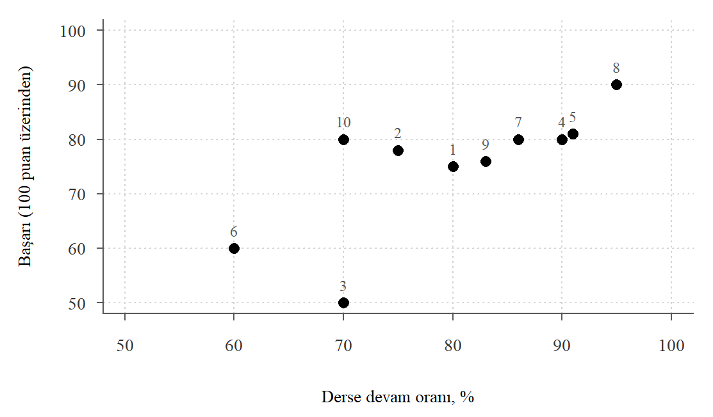
Şekil 6.1: Ders devam oranı ve başarı arasındaki serpilme çizimi
Şekil 6.1 öğrencilerin derse devam oranları ile başarı düzeyleri arasındaki ilişkinin serpilme çizimini göstermektedir. Noktaların üzerindeki sayılar öğrencilerin numaralarıdır. Bu grafikten hareketle devam oranı arttıkça başarının yükselme eğiliminde olduğunu söyleyebiliriz. İki değişken arasında aynı yönlü (pozitif) ve kabaca doğrusal bir ilişki görülmektedir. İlişki kusursuz değildir: aynı devam oranına (%70) sahip 3 ve 10 numaralı öğrencilerin notları arasında 30 puan fark vardır.
Örnek 6.1hane_ornek veri kümesinde yer alan aylik_gelir ve aylik_harcama değişkenlerinin serpilme çizimini oluşturunuz.
Çözüm
Çok sayıda nokta üst üste bineceği için noktaları yarı saydam çizelim. rgb() fonksiyonunun dördüncü argümanı saydamlığı belirler; üst üste binen noktaların olduğu bölgeler daha koyu görünür.
load("Data/hane_ornek.RData")plot(x = hane_ornek$aylik_gelir, y = hane_ornek$aylik_harcama,pch =19, col =rgb(0, 0, 0, 0.3),panel.first =grid(),xlab ="Aylık hane geliri, TL",ylab ="Aylık hane harcaması, TL" )
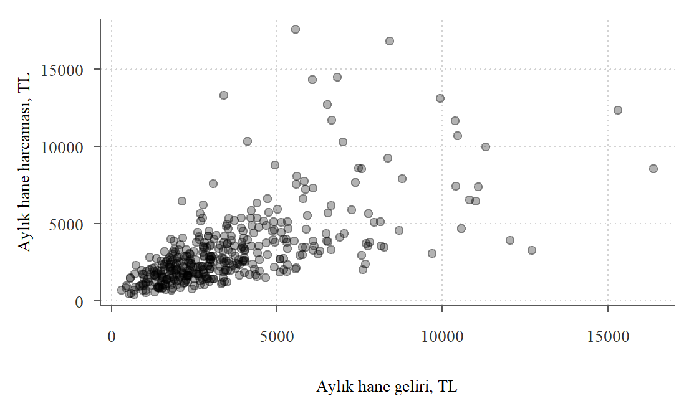
Şekil 6.2: Serpilme grafiği: aylık gelir ve harcama
Şekil 6.2 hanelerin aylık gelir ve harcama değerlerinin serpilme grafiğini göstermektedir. Genel olarak gelir düzeyi ile harcama arasında pozitif bir ilişki olduğu söylenebilse de grafiğin sol alt kısmında, gelir ve harcamanın düşük olduğu alanda noktaların yoğunlaştığı görülmektedir. Bu, hanelerin çoğunun düşük gelir ve düşük harcama düzeylerinde olduğunu gösterir. Gerçekten de özet istatistiklerden
summary(hane_ornek$aylik_harcama)
Min. 1st Qu. Median Mean 3rd Qu. Max.
408 1697 2575 3234 3845 17587
summary(hane_ornek$aylik_gelir)
Min. 1st Qu. Median Mean 3rd Qu. Max.
306.7 1935.1 2934.6 3566.9 4451.8 16372.9
hanelerin yüzde 75 kadarının 4452 TL’den az gelire sahip olduğu görülebilir. Gelir 5000 TL’nin altında olan hanelerin payı ise yüzde 79.2 olarak bulunur. Şekil 6.3 bu alt küme için serpilme çizimini göstermektedir. Bu grafikte gelir ve harcamanın düşük olduğu bölgede noktaların yoğunlaşması daha belirgin hâle gelmiştir. Gelirine oranla harcaması çok yüksek hanelerin de olduğu görülmektedir.
hane_ornek_alt1 <-subset(hane_ornek, aylik_gelir <5000)plot(x = hane_ornek_alt1$aylik_gelir,y = hane_ornek_alt1$aylik_harcama,pch =19, col =rgb(0, 0, 0, 0.3),panel.first =grid(),xlab ="Aylık hane geliri, TL",ylab ="Aylık hane harcaması, TL" )
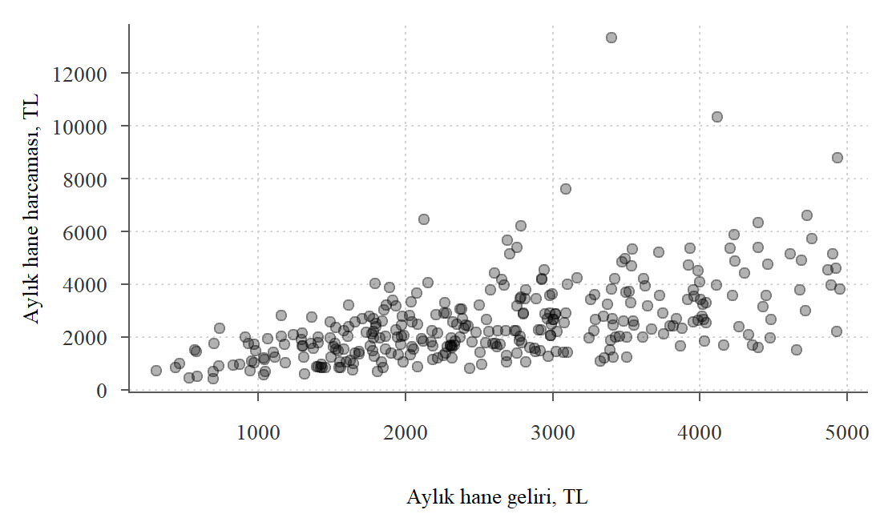
Şekil 6.3: Aylık geliri 5000 TL’den az olan hanelerde gelir ve harcama
Örnek 6.2 (Serpilme ve dağılım grafiği) Serpilme çizimine değişkenlerin dağılımlarını da eklemek mümkündür. Bunun için car paketinde yer alan scatterplot() fonksiyonu kullanılabilir. Paket yüklü değilse önce install.packages("car") komutuyla kurulmalıdır:
library(car)
Loading required package: carData
set.seed(1234)x <-rnorm(1000) +10y <-2+3* x +2*rnorm(1000)scatterplot(y ~ x, regLine =FALSE, smooth =FALSE, col ="gray40", pch =1)
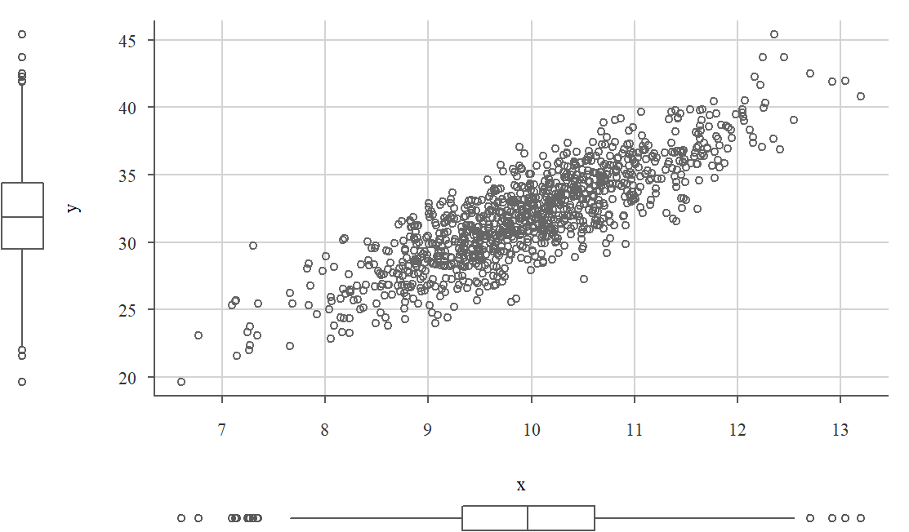
Şekil 6.4: Serpilme çizimi ve kutu grafiği
Şekil 6.4 bu veri kümesinin serpilme çizimini x ve y değişkenlerinin kutu çizimleriyle birlikte vermektedir. Bu iki değişken arasında pozitif yönlü doğrusal bir ilişki olduğunu görüyoruz. Ayrıca x’in merkezinin 10 civarında olduğunu ve dağılımının simetrik olduğunu söyleyebiliriz. Benzer şekilde y’nin merkezi 32 civarındadır ve dağılımı simetrik bir biçime sahiptir.
Serpilme çizimlerini inceleyerek değişkenler arasındaki ilişkinin yönü ve biçimi hakkında fikir edinebiliriz. Görsel araçlar verilerin faydalı bir özetini sunar, ancak bu özetler sayısal özetlerle desteklenmelidir. İki sayısal değişken arasındaki ilişkiyi özetlemek için kullanılan temel araçlar kovaryans ve korelasyondur. Kovaryans iki değişkenin birlikte nasıl değiştiğini ölçer ve ilişkinin yönü hakkında bilgi verir. Korelasyon ise doğrusal ilişkinin hem yönünü hem de gücünü ölçekten bağımsız olarak ifade eder.
6.2 Kovaryans
Kovaryans, iki değişkenin birlikte nasıl değiştiğini ölçen bir istatistiktir. İki değişkenin ortalamalarından sapmalarının çarpımlarının ortalaması olarak hesaplanır; varyansta olduğu gibi örneklemde toplam \(n\) yerine \(n-1\)’e bölünür. Kovaryans pozitifse değişkenler birlikte artma eğilimindedir; negatifse bir değişken artarken diğeri azalma eğilimindedir.
Tanım 6.1 (Anakütle kovaryansı) İki değişken arasındaki anakütle kovaryansı \[
\sigma_{xy} \equiv \text{Cov}(X, Y) = \frac{1}{N} \sum_{i=1}^{N} (X_i - \mu_x)(Y_i - \mu_y)
\tag{6.1}\] olarak tanımlanır ve \(\sigma_{xy}\) ya da \(\mbox{Cov}(X, Y)\) ile gösterilir. Burada \(N\) anakütlenin (evrenin) büyüklüğünü, \(\mu_x\) ve \(\mu_y\) bu değişkenlerin anakütle ortalamalarını ifade etmektedir. \(\mbox{Cov}(X, Y)\) pozitif, negatif ya da 0 olabilir.
Tanım 6.2 (Örneklem kovaryansı) Bir anakütleden çekilmiş \(n\) gözlemli bir veri kümesinden hareketle örneklem kovaryansı \[
s_{xy} = \frac{1}{n-1} \sum_{i=1}^{n} (x_i - \bar{x})(y_i - \bar{y})
\tag{6.2}\] olarak tanımlanır. Burada \(x_i\) ve \(y_i\) değişkenlerin \(i\)’inci gözlemlerini, \(\bar{x}\) ve \(\bar{y}\) örneklem ortalamalarını, \(n\) ise gözlem sayısını ifade etmektedir. Örneklem kovaryansı, bilinmeyen anakütle kovaryansını tahmin etmekte kullanılabilir.
Tablo 6.1: Kovaryans hesaplama tablosu: derse devam ve başarı
Öğrenci
\(x\)
\(y\)
\(x - \bar{x}\)
\(y - \bar{y}\)
\((x - \bar{x}) \times (y - \bar{y})\)
1
80
75
0
0
0
2
75
78
-5
3
-15
3
70
50
-10
-25
250
4
90
80
10
5
50
5
91
81
11
6
66
6
60
60
-20
-15
300
7
86
80
6
5
30
8
95
90
15
15
225
9
83
76
3
1
3
10
70
80
-10
5
-50
Toplam
800
750
0
0
859
Tablo 6.1 derse devam oranı ile başarı düzeyi arasındaki kovaryansı hesaplamaktadır. Bu tabloda \(x\) derse devam oranını, \(y\) başarı düzeyini (not) göstermektedir. Tablonun altındaki toplamlardan hareketle devam oranının ortalamasının \(\bar{x}=80\), başarı düzeyinin ortalamasının \(\bar{y}=75\) olduğu görülebilir. Dördüncü ve beşinci sütunlarda ortalamadan farklar hesaplanmıştır. Son sütunda ise bu farkların çarpımları yer almaktadır. Buradan hareketle iki değişken arasındaki örneklem kovaryansı kolayca hesaplanabilir:
R’da cov() fonksiyonu ile de bu hesaplama yapılabilir:
cov(veri1$Devam_oranı, veri1$Başarı)
[1] 95.44444
İki değişken arasındaki kovaryansın işareti ilişkinin yönü hakkında bilgi verir. Ancak büyüklüğü ölçü birimlerine bağlı olduğu için genellikle yorumlanmaz (bkz. alt bölüm 6.3.1). Kovaryansın işaretini, ortalamalardan farkların çarpımlarının işaretleri belirler. Şekil 6.5 bunu üç yapay veri kümesiyle görselleştirmektedir. Grafiklerde eksenler ortalamalardan farkları gösterir; böylece orijin iki değişkenin ortalamasına karşılık gelir ve düzlem dört bölgeye ayrılır. Farkların çarpımı pozitif olan gözlemler dolu, negatif olanlar içi boş noktalarla gösterilmiştir.
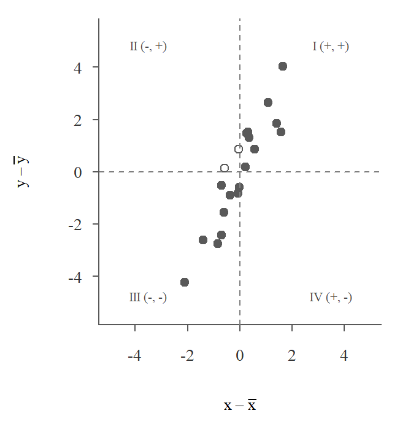
(a) Pozitif kovaryans
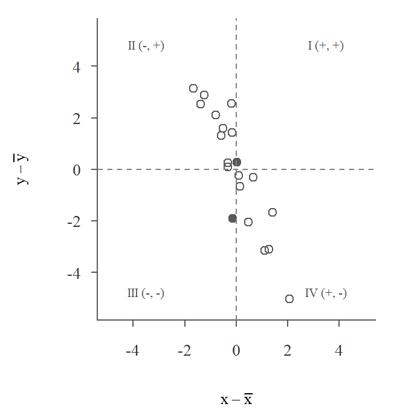
(b) Negatif kovaryans
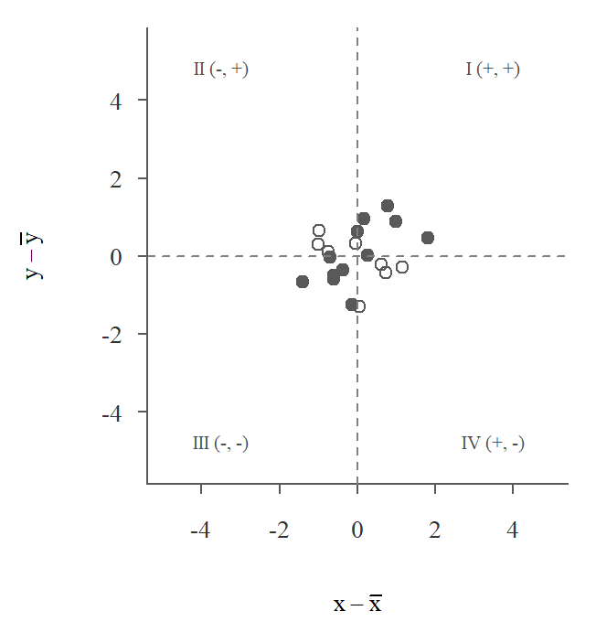
(c) Sıfıra yakın kovaryans
Şekil 6.5: Ortalamadan farklar ve kovaryansın işareti (dolu nokta: farkların çarpımı pozitif, boş nokta: negatif)
Şekil 6.5 (a) kovaryansın pozitif olduğu durumu göstermektedir. X ortalamanın üzerindeyken Y de ortalamanın üzerinde olma eğilimindeyse (bölge I) iki fark da pozitif olur ve çarpımları da pozitiftir. X ortalamanın altındayken Y de ortalamanın altında olma eğilimindeyse (bölge III) iki fark da negatif, çarpımları ise yine pozitiftir. Gözlemlerin çoğu bu iki bölgede yer aldığı için çarpımların toplamı pozitif olur. Bu veride örneklem kovaryansı 1.82 olarak bulunur.
Şekil 6.5 (b) ise tersi durumu göstermektedir. X ortalamanın altındayken Y kendi ortalamasının üzerinde değerler alıyorsa (bölge II) ya da X ortalamanın üzerindeyken Y ortalamanın altındaysa (bölge IV) çarpımın işareti negatif olur. Gözlemlerin çoğu bu bölgelerde yer aldığı için kovaryans negatiftir (-1.97). Noktalar orijinden uzaklaştıkça farkların çarpımları, dolayısıyla kovaryansın mutlak değeri de büyür.
Şekil 6.5 (c) X ile Y arasında ilişkinin olmadığı durumu göstermektedir. Bu durumda noktalar dört bölgeye kabaca eşit dağılır, pozitif ve negatif çarpımlar birbirini büyük ölçüde götürür ve kovaryans sıfıra yakın çıkar (0.15).
6.3 Korelasyon
Korelasyon, iki değişken arasındaki doğrusal ilişkinin gücünü ve yönünü ölçen bir istatistiktir. En yaygın kullanılan korelasyon ölçüsü Pearson korelasyon katsayısıdır. Değerleri \(-1\) ile \(+1\) arasında değişir. \(+1\) mükemmel pozitif doğrusal ilişkiyi, \(-1\) mükemmel negatif doğrusal ilişkiyi, \(0\) ise doğrusal bir ilişkinin olmadığını ifade eder.
Tanım 6.3 (Anakütle korelasyon katsayısı) Bir anakütle için iki değişken arasındaki korelasyon katsayısı \[
\rho_{xy} = \frac{\sigma_{xy}}{\sigma_x \sigma_y} \equiv \frac{\text{Cov}(X, Y)}{\sigma_x \sigma_y}
\tag{6.3}\] formülüyle hesaplanır. Burada \(\sigma_{xy}\) iki değişken arasındaki anakütle kovaryansını, \(\sigma_x\) ve \(\sigma_y\) bu değişkenlerin anakütle standart sapmalarını ifade etmektedir.
Tanım 6.4 (Örneklem korelasyon katsayısı) Örneklem korelasyon katsayısı \[
r_{xy} = \frac{s_{xy}}{s_x s_y}
\tag{6.4}\] olarak tanımlanır. Burada \(s_{xy}\) iki değişken arasındaki örneklem kovaryansını, \(s_x\) ve \(s_y\) bu değişkenlerin örneklem standart sapmalarını ifade etmektedir.
Örneklem korelasyon katsayısı \(r_{xy}\), iki sayısal değişken arasındaki doğrusal ilişkinin gücünü ve yönünü ölçer. Her zaman \(-1\) ile \(1\) arasında bir değer alır:
\(r = 1\): Mükemmel pozitif doğrusal ilişki. Bütün noktalar eğimi pozitif olan bir doğru üzerindedir.
\(r = -1\): Mükemmel negatif doğrusal ilişki. Bütün noktalar eğimi negatif olan bir doğru üzerindedir.
\(r = 0\): Değişkenler arasında doğrusal bir ilişki yoktur. Bu, hiçbir ilişki olmadığı anlamına gelmez; değişkenler arasında doğrusal olmayan güçlü bir ilişki bulunabilir.
Korelasyonun işareti kovaryansın işaretiyle aynıdır, çünkü paydadaki standart sapmalar her zaman pozitiftir. Pozitif korelasyon durumunda noktalar ağırlıklı olarak I. ve III. bölgelerde, negatif korelasyon durumunda ise II. ve IV. bölgelerde toplanır. Kovaryansı iki standart sapmanın çarpımına bölmek, ölçü birimini ortadan kaldırır ve katsayıyı \(-1\) ile \(1\) arasına sıkıştırır.
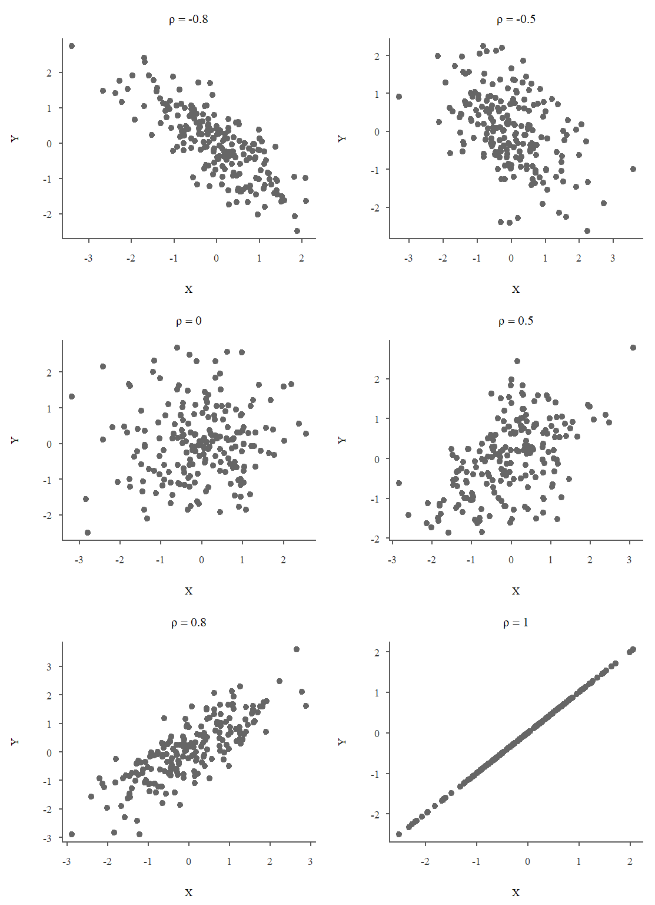
Şekil 6.6: Anakütle korelasyon katsayısı farklı olan veri kümelerinin serpilme çizimleri (her panelde 200 gözlem)
Korelasyon katsayısı \(1\)’e ya da \(-1\)’e yaklaştıkça doğrusal ilişkinin güçlendiğini, \(0\)’a yaklaştıkça zayıfladığını söyleyebiliriz. Şekil 6.6 anakütle korelasyon katsayısı farklı olan altı veri kümesinin serpilme çizimlerini göstermektedir. Her panelde 200 gözlemlik bir örneklem çizildiği için örneklem korelasyonları panel başlığındaki \(\rho\) değerinden biraz farklıdır. Korelasyon katsayısının mutlak değeri büyüdükçe noktaların bir doğru etrafında daha sıkı kümelendiği görülmektedir. Özetlersek, bu grafikte
\(\rho = -0.8\): Güçlü negatif ilişki. X değeri arttıkça Y değeri azalma eğilimindedir.
\(\rho = -0.5\): Orta düzeyde negatif ilişki. X değeri arttıkça Y değeri genel olarak azalmaktadır, ancak noktalar doğru etrafında daha fazla dağılır.
\(\rho = 0\): Doğrusal ilişki yoktur. Noktalar belirgin bir eğim olmadan dağılır.
\(\rho = 0.5\): Orta düzeyde pozitif ilişki. X değeri arttıkça Y değeri genel olarak artmaktadır.
\(\rho = 0.8\): Güçlü pozitif ilişki. X değeri arttıkça Y değeri artma eğilimindedir.
\(\rho = 1\): Mükemmel pozitif doğrusal ilişki. Bütün noktalar bir doğru üzerindedir; X bir birim arttığında Y her zaman aynı miktarda artar.
“Güçlü” ve “orta düzeyde” gibi nitelemeler için herkesin kabul ettiği kesin sınırlar yoktur. Aynı katsayı bir alanda güçlü, başka bir alanda zayıf sayılabilir. Bu yüzden katsayıyı her zaman serpilme çizimiyle birlikte yorumlamak gerekir.
Örnek 6.3Tablo 6.1 verisinden hareketle derse devam oranı ile başarı notu arasındaki Pearson korelasyon katsayısını hesaplayınız.
Çözüm
Örneklem korelasyon katsayısını hesaplayabilmek için kovaryansı ve değişkenlerin standart sapmalarını bulmamız gerekir. Örneklem kovaryansını 95.4 olarak bulmuştuk. Derse devam oranının örneklem standart sapması 11.14, başarı notunun standart sapması ise 11.53 olarak bulunabilir. Böylece örneklem korelasyon katsayısı
\[
r_{xy} = \frac{s_{xy}}{s_x s_y} = \frac{95.4}{(11.14)(11.53)} \approx 0.74
\] olur. cor() fonksiyonu ile
cor(veri1$Devam_oranı, veri1$Başarı)
[1] 0.7435248
sonucuna ulaşılır. Buradan hareketle derse devam oranı ile başarı düzeyi arasında güçlü pozitif bir doğrusal ilişki olduğunu söyleyebiliriz. Ancak bu sonucun yalnızca 10 öğrenciye dayandığını unutmamak gerekir; tek bir öğrencinin eklenmesi bile katsayıyı büyük ölçüde değiştirebilir (bkz. Alıştırma 6.3).
6.3.1 Ölçü birimi ve doğrusal dönüşümler
Kovaryansın büyüklüğünün neden yorumlanamadığını görmek için devam oranını yüzde yerine 0 ile 1 arasında bir oran olarak ifade edelim:
İlişkinin kendisinde hiçbir şey değişmediği hâlde kovaryans 95.4 değerinden 0.954 değerine inmiştir. Korelasyon katsayısı ise aynı kalmıştır. Genel olarak değişkenlere \[
u_i = a + b\,x_i, \qquad v_i = c + d\,y_i
\] biçiminde doğrusal dönüşümler uygulandığında \[
s_{uv} = b\,d\,s_{xy}, \qquad r_{uv} = \begin{cases} r_{xy}, & b\,d > 0 \\ -r_{xy}, & b\,d < 0 \end{cases}
\] olur. Bir sabit eklemek (\(a\), \(c\)) ortalamadan farkları değiştirmez, bu yüzden kovaryansı da etkilemez. Bir sabitle çarpmak ise farkları, dolayısıyla kovaryansı o sabitle çarpar. Standart sapmalar da \(|b|\) ve \(|d|\) ile çarpıldığı için korelasyon katsayısında bu çarpanlar birbirini götürür; yalnızca işaret değişebilir. Bu yüzden sıcaklığı Celsius yerine Fahrenheit, geliri TL yerine bin TL ile ölçmek korelasyon katsayısını değiştirmez.
Aynı sonucu şöyle de ifade edebiliriz: korelasyon katsayısı, standartlaştırılmış değerlerin çarpımlarının ortalamasıdır: \[
r_{xy} = \frac{1}{n-1}\sum_{i=1}^{n} \left(\frac{x_i - \bar{x}}{s_x}\right)\left(\frac{y_i - \bar{y}}{s_y}\right).
\] Standartlaştırılmış değerlerin ölçü birimi yoktur; bu yüzden korelasyonun da ölçü birimi yoktur.
Örnek 6.4eticaret veri kümesinde (bkz. Tablo 3.4) teslim süresi ile müşteri memnuniyeti arasındaki ilişkiyi inceleyelim. İki değişken de az sayıda farklı değer aldığı için binlerce siparişin serpilme çizimi üst üste binen noktalardan oluşur ve bilgi vermez. Bunun yerine her teslim süresi için ortalama memnuniyeti hesaplayalım:
plot(as.numeric(names(ort_memnuniyet)), ort_memnuniyet, type ="b", pch =19,ylim =c(1, 5), xlab ="Teslim süresi (gün)", ylab ="Ortalama memnuniyet (1-5)")
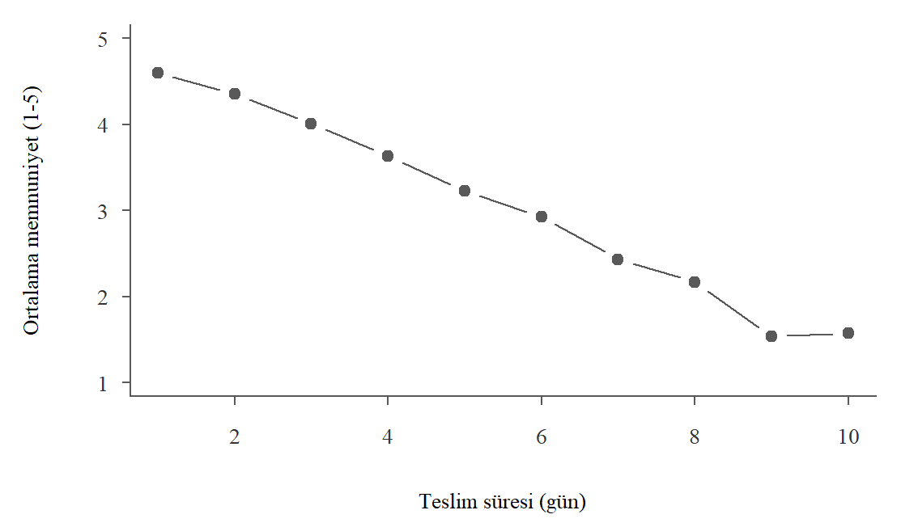
Şekil 6.7: Teslim süresine göre ortalama müşteri memnuniyeti
Korelasyon katsayısını hesaplarken memnuniyetin eksik olduğu siparişleri dışarıda bırakmamız gerekir:
cor(eticaret$teslim_suresi, eticaret$memnuniyet, use ="complete.obs")
[1] -0.5250615
Şekil 6.7 teslim süresi uzadıkça ortalama memnuniyetin düzenli olarak azaldığını göstermektedir. Korelasyon katsayısı -0.53 olarak bulunur. use = "complete.obs" argümanı hesaplamayı iki değişkenin de gözlendiği 12203 siparişle sınırlar. Bu argüman olmadan cor() fonksiyonu eksik gözlem nedeniyle NA sonucunu verir.
Bu örnekte iki noktaya dikkat etmek gerekir. Birincisi, memnuniyet 1-5 arası puanlarla ölçülen sıralı bir değişkendir ve puanlar arasındaki mesafelerin eşit olduğu varsayımı tartışmalıdır. Pearson korelasyon katsayısı bu yüzden ilişkinin yönü ve kabaca gücü hakkında bilgi verir; sıralı değişkenler için daha uygun bir ölçüyü aşağıda göreceğiz (bkz. alt bölüm 6.3.5). İkincisi, en uzun teslim sürelerinde sipariş sayısı çok azdır. Bu sürelerdeki ortalamalar az sayıda siparişe dayandığı için daha belirsizdir.
6.3.2 Korelasyon katsayısının geometrik anlamı
Korelasyon katsayısı, ortalamadan farklardan oluşan iki vektör arasındaki açının kosinüsü olarak düşünülebilir. \(\mathbf{a}\) ve \(\mathbf{b}\), \(n\) elemanlı iki vektör olsun. Bu iki vektörün iç çarpımı \[
\mathbf{a} \cdot \mathbf{b} = \sum_{i=1}^{n} a_i b_i
\] ve vektörlerin normları (uzunlukları) \[
\| \mathbf{a} \| = \sqrt{\sum_{i=1}^{n} a_i^2}, \qquad \| \mathbf{b} \| = \sqrt{\sum_{i=1}^{n} b_i^2}
\] olarak tanımlanır. İki vektör arasındaki açı \(\theta\) (\(0\leq \theta\leq \pi\)) olmak üzere, bu açının kosinüsü iç çarpım ve uzunluklar yardımıyla \[
\cos(\theta) = \frac{\mathbf{a} \cdot \mathbf{b}}{\| \mathbf{a} \| \| \mathbf{b} \|}
\] olarak yazılabilir. Kosinüs fonksiyonu her zaman \(-1\) ile \(1\) arasında değerler alır.
Ortalamadan farklar vektörlerini \(\mathbf{a} = (x_1 - \bar{x}, \ldots, x_n - \bar{x})\) ve \(\mathbf{b} = (y_1 - \bar{y}, \ldots, y_n - \bar{y})\) olarak tanımlarsak, Denklem 6.4 formülündeki \(n-1\) çarpanları birbirini götürür ve \[
r = \frac{\sum_{i=1}^{n} (x_i - \bar{x})(y_i - \bar{y})}{\sqrt{\sum_{i=1}^{n} (x_i - \bar{x})^2} \sqrt{\sum_{i=1}^{n} (y_i - \bar{y})^2}} = \cos(\theta)
\] elde ederiz. Buna göre:
\(r = 1\): İki vektör aynı yöndedir ve aralarındaki açı \(\theta = 0\)’dır, dolayısıyla \(\cos(0) = 1\).
\(r = -1\): İki vektör zıt yöndedir ve aralarındaki açı \(\theta = \pi\), yani \(180^\circ\)’dir. Dolayısıyla \(\cos(\pi) = -1\) olur.
\(r = 0\): İki vektör birbirine dikdir; aralarındaki açı \(\theta = \pi/2\), yani \(90^\circ\)’dir ve \(\cos(\pi/2) = 0\) olur.
Cauchy-Schwarz eşitsizliği: İki vektörün iç çarpımının mutlak değeri, bu vektörlerin normlarının çarpımını aşamaz: \[
\left| \sum_{i=1}^{n} (x_i - \bar{x})(y_i - \bar{y}) \right| \leq \sqrt{\sum_{i=1}^{n} (x_i - \bar{x})^2} \sqrt{\sum_{i=1}^{n} (y_i - \bar{y})^2}
\] Eşitsizliğin iki tarafını sağdaki ifadeye böldüğümüzde \(|r| \leq 1\) sonucunu elde ederiz. Korelasyon katsayısının neden hiçbir zaman \(-1\) ile \(1\) aralığının dışına çıkamadığını bu eşitsizlik açıklar. Eşitlik yalnızca iki değişken arasında tam doğrusal bir ilişki (pozitif ya da negatif) olduğunda sağlanır.
6.3.3 Görselleştirmenin önemi
Korelasyon katsayısı, ortalama ve standart sapma gibi bir özet ölçüdür. Her özet ölçü gibi o da veriyi tek bir sayıya indirger ve bu sırada bir şeyleri görünmez kılar. Aynı katsayıyı veren veri kümeleri birbirinden çok farklı görünebilir. Bu yüzden iki değişken arasındaki ilişkiyi yorumlamadan önce serpilme diyagramına bakmak gerekir.
Örnek 6.5 (Anscombe veri kümesi) İstatistikçi Francis Anscombe, grafiğe bakmadan yalnızca özet istatistiklere güvenmenin tehlikesini göstermek için dört küçük veri kümesi oluşturmuştur (Anscombe 1973). Bu veriler R ile birlikte gelen datasets paketinde yer alır:
Şekil 6.8 bu veri kümelerini göstermektedir. Dört veri kümesinde de x’lerin ortalaması 9, varyansı 11’dir; y’lerin ortalaması (7.50) ve varyansı (4.12) ise iki ondalığa kadar aynıdır. Korelasyon katsayıları da neredeyse aynıdır. Ancak grafiklere bakıldığında bu verilerin birbirinden çok farklı ilişkiler sergilediği görülmektedir.
Veri 1: \(x_1\) ile \(y_1\) arasında, noktaların bir doğru etrafında dağıldığı pozitif yönlü doğrusal bir ilişki vardır. Korelasyon katsayısının anlatmak istediği durum budur.
Veri 2: \(x_2\) ile \(y_2\) arasında kusursuza yakın, ancak doğrusal olmayan (ikinci dereceden, parabolik) bir ilişki vardır.
Veri 3: Noktalar tek bir gözlem dışında bir doğru üzerindedir. Bu uç değer korelasyon katsayısını 1’den 0.816’ya düşürür.
Veri 4: 11 gözlemin 10’unda \(x_4\) değeri 8’dir. Aradaki bütün değişkenlik tek bir gözlemden (\(x_4 = 19\)) gelir. Bu gözlem olmasa \(x_4\)’ün varyansı sıfır olur ve korelasyon katsayısı hesaplanamaz.
Anscombe dörtlüsü, yalnızca korelasyon katsayısına dayanarak değişkenler arasındaki ilişkiyi anlamanın sınırlarını ortaya koymaktadır. Korelasyon katsayısı yalnızca doğrusal ilişkiyi ölçer; değişkenler arasında doğrusal olmayan güçlü bir ilişki olabilir. Uç değerler korelasyon katsayısını önemli ölçüde değiştirebilir. Ayrıca aynı korelasyon katsayısına sahip veri kümeleri çok farklı biçimlerde olabilir. Bu yüzden korelasyon katsayısını hesaplamadan önce serpilme çizimine bakmak gerekir (ayrıca bkz. Alıştırma 6.3 ve Alıştırma 6.5).
6.3.4 Doğrusal olmayan ilişkiler ve dönüşümler
Korelasyon katsayısı yalnızca doğrusal ilişkiyi ölçtüğü için gerçek verilerde karşılaşılan eğrisel ilişkileri iyi özetlemeyebilir. Bu kısımda ülke veri kümesinden (bkz. Örnek 3.4) iki örnekle bu durumu inceleyeceğiz.
Örnek 6.6 (Gelir ve yaşam beklentisi) 2022 yılında ülkelerin kişi başına GSYİH’si (satın alma gücü paritesiyle) ile doğumda yaşam beklentisi arasındaki ilişkiyi inceleyelim. Şekil 6.9 iki değişkenin serpilme çizimini iki farklı biçimde göstermektedir.
load("Data/ulkeler.RData")kesit_2022 <-subset(ulkeler, yil ==2022&!is.na(kisi_basi_gsyih_sagp))plot(kesit_2022$kisi_basi_gsyih_sagp /1000, kesit_2022$yasam_beklentisi,pch =19, col =rgb(0, 0, 0, 0.35),xlab ="Kişi başına GSYİH (bin $)", ylab ="Yaşam beklentisi (yıl)")plot(kesit_2022$kisi_basi_gsyih_sagp, kesit_2022$yasam_beklentisi, log ="x",pch =19, col =rgb(0, 0, 0, 0.35), xaxt ="n",xlab ="Kişi başına GSYİH (bin $, logaritmik)", ylab ="Yaşam beklentisi (yıl)")axis(1, at =c(1e3, 3e3, 1e4, 3e4, 1e5), labels =c(1, 3, 10, 30, 100))
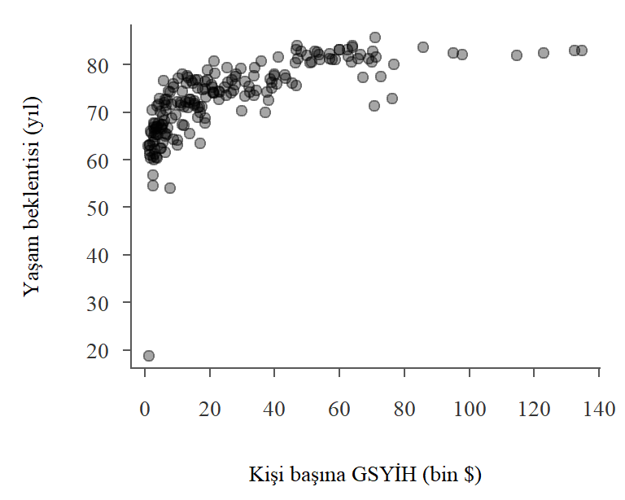
(a) Gelir, doğrusal ölçek
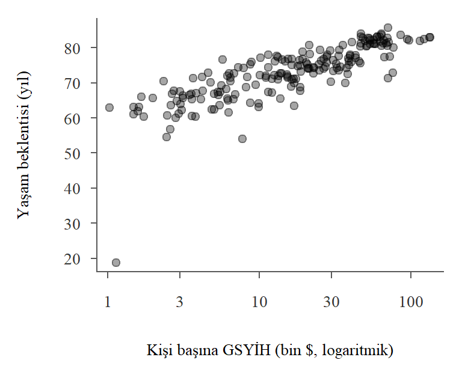
(b) Gelir, logaritmik ölçek
Şekil 6.9: Kişi başına GSYİH ve doğumda yaşam beklentisi (2022)
Doğrusal ölçekte (Şekil 6.9 (a)) ilişki belirgin biçimde eğriseldir. Düşük gelir düzeylerinde gelirdeki küçük artışlar yaşam beklentisindeki büyük farklarla birlikte görülür. Belirli bir gelir düzeyinden sonra ise eğri yataylaşır. Gelir ile yaşam beklentisi arasındaki bu ilişki, onu ilk kez sistemli biçimde inceleyen demograf Samuel Preston’ın adıyla Preston eğrisi olarak bilinir (Preston 1975).
Logaritmik ölçekte (Şekil 6.9 (b)) yatay eksendeki eşit mesafeler gelirin aynı oranda artmasına karşılık gelir. 1 bin dolardan 10 bin dolara çıkmak ile 10 bin dolardan 100 bin dolara çıkmak aynı yatay mesafeyi kaplar. Bu ölçekte noktalar bir doğru etrafında çok daha düzenli dağılmaktadır. İki durumda korelasyon katsayısını hesaplayalım:
Korelasyon katsayısı 0.67 değerinden 0.81 değerine yükselmektedir. İlişkinin kendisi değişmemiştir, değişen onu ölçtüğümüz ölçektir. Logaritma dönüşümü eğrisel ilişkiyi doğrusala yaklaştırdığı için doğrusal ilişkiyi ölçen korelasyon katsayısı da büyümüştür.
Grafiğin en altında kalan nokta, yaşam beklentisi 18.8 yıl olarak görünen Orta Afrika Cumhuriyeti’dir. Bu değerin bir tahmin sorunu olabileceğini merkezi eğilim ölçülerini incelerken görmüştük (bkz. Örnek 5.6). Bu gözlem çıkarıldığında korelasyon katsayıları doğrusal ölçekte 0.74, logaritmik ölçekte 0.85 olur. 194 ülkelik bir kesitte bile tek bir gözlem katsayıyı belirgin biçimde değiştirebilmektedir.
Bu grafik ülkeler arasındaki bir ilişkiyi betimler. Daha zengin ülkelerde insanların daha uzun yaşadığını gösterir, ancak gelirin tek başına yaşam süresini ne ölçüde belirlediğini söylemez. Sağlık hizmetleri, eğitim ve altyapı gibi etkenler hem gelirle hem de yaşam beklentisiyle ilişkilidir.
Örnek 6.7 (Gelir ve karbon emisyonu: çevresel Kuznets eğrisi) İktisatçı Simon Kuznets, ülkeler kalkındıkça gelir eşitsizliğinin önce artıp sonra azaldığını, yani gelir ile eşitsizlik arasında ters U biçiminde bir ilişki olduğunu ileri sürmüştü (Kuznets 1955). Benzer bir fikir daha sonra çevre kirliliği için ortaya atıldı (Grossman and Krueger 1995). Buna göre sanayileşmenin ilk aşamalarında gelir arttıkça kirlilik de artar. Belirli bir gelir düzeyinden sonra ise hizmet sektörünün payının büyümesi, daha temiz teknolojiler ve çevre düzenlemeleri sayesinde kirlilik azalmaya başlar. Gelir ile kirlilik arasındaki bu varsayımsal ters U ilişkisine çevresel Kuznets eğrisi denir.
Bu fikri ülke veri kümesindeki kişi başına CO2 emisyonuyla inceleyelim. Önce 2022 yılı kesitine bakalım. Bu karşılaştırmada nüfusu 1 milyonun altındaki ülke ve bölgeleri dışarıda bırakıyoruz. Bu çok küçük ülkelerin bir kısmında emisyon değerleri güvenilir görünmemektedir. Örneğin birkaç küçük ada ülkesinde kişi başına emisyon yıllar boyunca değişmeden 0.002 ton olarak kaydedilmiştir, Tuvalu’da ise sıfırdır. Sıfırın logaritması alınamaz. Çok küçük değerler de logaritmik ölçekte diğer gözlemlerden çok uzağa düşerek sonuçları bozar.
co2_kesit <-subset(kesit_2022, !is.na(co2_kisi_basi) & nufus >=1e6)plot(co2_kesit$kisi_basi_gsyih_sagp, co2_kesit$co2_kisi_basi, log ="xy",pch =19, col =rgb(0, 0, 0, 0.35), xaxt ="n", yaxt ="n",xlab ="Kişi başına GSYİH (bin $, logaritmik)",ylab ="Kişi başına CO2 (ton, logaritmik)")axis(1, at =c(1e3, 3e3, 1e4, 3e4, 1e5), labels =c(1, 3, 10, 30, 100))axis(2, at =c(0.1, 0.3, 1, 3, 10, 30), labels =c(0.1, 0.3, 1, 3, 10, 30))etiket <-c("Katar", "Türkiye", "İsveç", "Hindistan")e <- co2_kesit[match(etiket, co2_kesit$ulke), ]points(e$kisi_basi_gsyih_sagp, e$co2_kisi_basi, pch =19, col ="firebrick")text(e$kisi_basi_gsyih_sagp, e$co2_kisi_basi, etiket, pos =c(2, 1, 1, 3), cex =0.8, col ="firebrick")
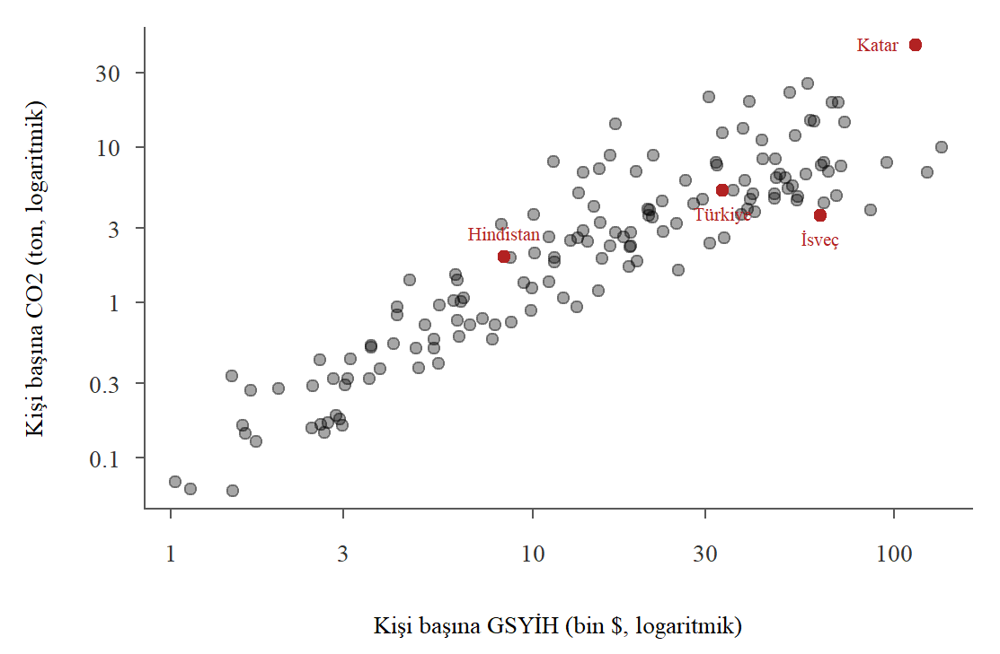
Şekil 6.10: Kişi başına GSYİH ve kişi başına CO2 emisyonu (2022, iki eksen de logaritmik)
Şekil 6.10, ülkeler düzeyinde gelir ile emisyon arasında güçlü ve pozitif bir ilişki olduğunu göstermektedir. Kesitte ters U biçimi belirgin değildir. En yüksek gelir düzeylerinde emisyonların dağılımı genişlese de genel eğilim yukarı doğrudur. Korelasyon katsayısı doğrusal ölçekte 0.65, iki değişkenin de logaritması alındığında ise 0.91 olarak bulunur. İki değişken de sağa çarpık olduğu için doğrusal ölçekte birkaç yüksek değer katsayıyı belirgin biçimde etkiler. Kişi başına emisyonun en yüksek olduğu üç ülke olan Katar, Bahreyn ve Kuveyt, petrol ve doğalgaz üreticisi Körfez ülkeleridir.
Kuznets eğrisi aslında bir ülkenin kalkınma sürecinde, yani zaman içinde ne olduğuna ilişkin bir iddiadır. Bu yüzden ülkelerin zaman içindeki seyrine de bakmamız gerekir. Şekil 6.11 seçilmiş sekiz ülkenin 1970-2022 dönemindeki yolunu göstermektedir. Her çizgi bir ülkenin yıllar içinde gelir ve emisyon düzleminde izlediği yoldur. İçi boş daire 1970 yılını, dolu daire 2022 yılını göstermektedir.
secilen <-c("ABD", "Almanya", "Birleşik Krallık", "Fransa","Güney Kore", "Çin", "Türkiye", "Hindistan")yol <-subset(ulkeler, ulke %in% secilen & yil >=1970& yil <=2022)renk <-palette.colors(9, "Okabe-Ito")[c(1:4, 6:9)]plot(NA, log ="x", xlim =c(250, 150000), ylim =c(0, 24), xaxt ="n",xlab ="Kişi başına GSYİH (bin sabit 2015 $, logaritmik)",ylab ="Kişi başına CO2 (ton)")axis(1, at =c(300, 1e3, 3e3, 1e4, 3e4, 1e5), labels =c(0.3, 1, 3, 10, 30, 100))konum <-c(ABD =4, Almanya =4, "Birleşik Krallık"=4, Fransa =1,"Güney Kore"=4, "Çin"=3, "Türkiye"=4, Hindistan =1)for (j inseq_along(secilen)) { d <- yol[yol$ulke == secilen[j], ]lines(d$kisi_basi_gsyih, d$co2_kisi_basi, col = renk[j], lwd =2)points(d$kisi_basi_gsyih[1], d$co2_kisi_basi[1], col = renk[j], pch =1, cex =1.1)points(d$kisi_basi_gsyih[nrow(d)], d$co2_kisi_basi[nrow(d)], col = renk[j], pch =19)text(d$kisi_basi_gsyih[nrow(d)], d$co2_kisi_basi[nrow(d)], secilen[j],col = renk[j], pos = konum[[secilen[j]]], cex =0.75)}
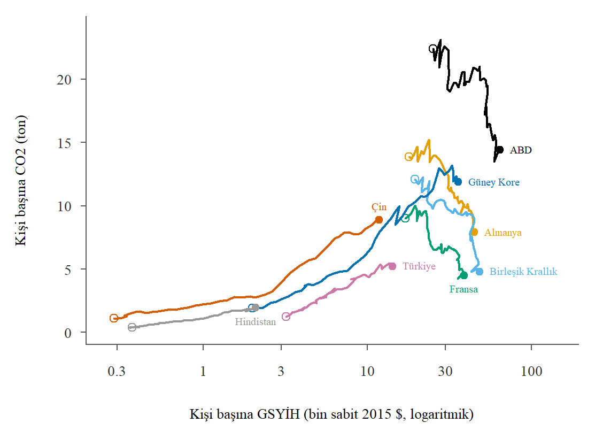
Şekil 6.11: Seçilmiş ülkelerde kişi başına GSYİH ve CO2 emisyonunun seyri, 1970-2022
Grafikteki iki farklı hareket dikkat çekicidir. Çin, Hindistan, Türkiye ve Güney Kore’de dönem boyunca gelir de emisyon da artmıştır; bu ülkeler grafikte sağa ve yukarı doğru ilerler. Almanya, Birleşik Krallık ve Fransa’da ise kişi başına emisyon 1970’lerde en yüksek düzeyine ulaşmış, sonra gelir artmaya devam ederken azalmıştır. ABD’de kişi başına emisyon 2000’lerin ortasına kadar yaklaşık yatay seyretmiş, ardından belirgin biçimde düşmüştür. Bu dört ülke grafikte sağa ve aşağı doğru ilerler. Ülkelerin yolları bir arada düşünüldüğünde ters U biçimini andıran bir görüntü ortaya çıkmaktadır.
Aynı iki değişken arasındaki korelasyonu her ülke için ayrı ayrı, zaman boyutunda hesaplayalım:
r_zaman <-sapply(secilen, function(u) { d <- yol[yol$ulke == u, ]cor(d$kisi_basi_gsyih, d$co2_kisi_basi, use ="complete.obs")})round(r_zaman, 2)
ABD Almanya Birleşik Krallık Fransa
-0.83 -0.95 -0.87 -0.91
Güney Kore Çin Türkiye Hindistan
0.96 0.98 0.97 0.98
Korelasyon katsayısı ABD, Almanya, Birleşik Krallık ve Fransa’da -0.95 ile -0.83 arasında negatif, diğer dört ülkede ise 0.96 ile 0.98 arasında pozitiftir. Aynı iki değişken arasındaki ilişki, hangi ülkeye ve hangi döneme bakıldığına göre yön değiştirmektedir. Anscombe dörtlüsünün ikinci veri kümesinde olduğu gibi, ilişki doğrusal değilse tek bir korelasyon katsayısı onu özetleyemez. Farklı gelir düzeylerindeki gözlemleri bir araya getirdiğimizde artan ve azalan kısımlar birbirini kısmen götürür.
Bu grafikler çevresel Kuznets eğrisi hipotezini kanıtlamaz, yalnızca onunla tutarlı bir tablo sunar. Üç noktaya dikkat etmek gerekir. Birincisi, buradaki emisyon göstergesi bir ülkenin kendi sınırları içinde üretilen emisyonları ölçer. Gelişmiş ülkelerin tükettiği malların giderek daha fazla başka ülkelerde üretilmesi, bu ülkelerde gözlenen düşüşün bir kısmını açıklıyor olabilir. İkincisi, veri 1970’te başladığı için gelişmiş ülkelerin emisyonlarının arttığı dönemi göremiyoruz. Üçüncüsü, farklı ülkelerin yollarını tek bir eğriye bağlamak ve gelirin emisyonları nasıl etkilediğine ilişkin nedensel bir sonuç çıkarmak için daha ileri yöntemler gerekir.
Örnek 6.8 (Konut fiyatı ve daire büyüklüğü) Dönüşüm yalnız ülke verilerinde işe yarayan bir hile değildir. İstanbul Beşiktaş ilçesindeki satılık daire ilanlarında fiyat ile daire büyüklüğü arasındaki ilişkiye bakalım (bkz. Tablo 3.4).
Şekil 6.12: Beşiktaş’ta satılık daire ilanlarında fiyat ve büyüklük
Doğrusal ölçekte (Şekil 6.12 (a)) noktalar sola toplanır ve yukarı doğru açılan bir yelpaze oluşturur. Büyük daireler hem daha pahalıdır hem de fiyatları çok daha geniş bir aralığa yayılır. Logaritmik ölçekte (Şekil 6.12 (b)) bu yelpaze kapanır ve noktalar bir doğru çevresinde toplanır.
Korelasyon katsayısı 0.74 değerinden 0.83 değerine yükselir. İki değişkenin de logaritması alındığında ilişki oranlar cinsinden okunur. Daire büyüklüğündeki yüzde değişme, fiyatta yaklaşık sabit bir yüzde değişmeye karşılık gelir. Aynı hesap Bakırköy ilanlarında da benzer sonuç verir, katsayı 0.77 değerinden 0.81 değerine çıkar.
Fiyatı belirleyen tek değişken büyüklük değildir. Semt, bina yaşı ve ısıtma sistemi gibi özellikler de fiyata yansır. Bu özellikleri aynı anda hesaba katmak için Kısım II’de göreceğimiz regresyon analizi gerekir.
6.3.5 Sıra korelasyonu
Pearson korelasyon katsayısı iki durumda ilişkiyi iyi özetlemeyebilir. Birincisi, değişkenlerden biri ya da ikisi memnuniyet puanı gibi sıralı (ordinal) bir değişken olabilir. Bu durumda puanlar arasındaki mesafelerin eşit olduğunu varsaymak için bir gerekçe yoktur. İkincisi, ilişki monoton olabilir, yani bir değişken arttıkça diğeri hep aynı yönde değişebilir, ama bu değişim doğrusal olmayabilir.
Bu durumlarda Spearman sıra korelasyon katsayısı kullanılabilir. Spearman katsayısı, gözlemlerin kendileri yerine sıralarıyla hesaplanan Pearson korelasyon katsayısıdır. Her değişkenin gözlemleri küçükten büyüğe sıralanır ve en küçük gözleme 1, en büyüğüne \(n\) sırası verilir. Eşit gözlemlere, paylaştıkları sıraların ortalaması verilir. R’da sıraları rank() fonksiyonu hesaplar:
rank(devam)
[1] 5.0 4.0 2.5 8.0 9.0 1.0 7.0 10.0 6.0 2.5
rank(basari)
[1] 3 5 1 7 9 2 7 10 4 7
Devam oranı 70 olan iki öğrenci 2. ve 3. sıraları paylaştığı için ikisine de 2.5 sırası verilmiştir. Sıraların Pearson korelasyonu, cor() fonksiyonunun method = "spearman" seçeneğiyle hesaplanan katsayıya eşittir:
Eşit gözlem yoksa Spearman katsayısı, \(d_i\) iki değişkendeki sıralar arasındaki fark olmak üzere, daha basit bir formülle de hesaplanabilir: \[
r_s = 1 - \frac{6\sum_{i=1}^{n} d_i^2}{n(n^2-1)}
\] Eşit gözlem sayısı az olduğunda bu formül yaklaşık olarak aynı sonucu verir.
Spearman katsayısı da \(-1\) ile \(1\) arasında değer alır. \(r_s = 1\) olması, bir değişkendeki sıralamanın diğerindeki sıralamayla tamamen aynı olduğunu, yani ilişkinin kusursuz biçimde monoton artan olduğunu gösterir; noktaların bir doğru üzerinde olması gerekmez. Sıralar değişkenin artan bir fonksiyonuyla dönüştürülmesinden etkilenmediği için Spearman katsayısı logaritma dönüşümüyle değişmez. Bunu Preston örneğinde görelim:
Pearson katsayısı dönüşümle 0.67 değerinden 0.81 değerine yükselirken Spearman katsayısı iki durumda da 0.86 olarak kalmaktadır. Spearman katsayısı ilişkinin doğrusal olup olmadığıyla ilgilenmez, yalnızca ne kadar tutarlı biçimde aynı yönde olduğunu ölçer.
Konut örneğinde de (bkz. Örnek 6.8) aynı durum görülür. Fiyat ile büyüklük arasındaki Spearman katsayısı 0.85 olup ham veriyle hesaplanan Pearson katsayısından da, logaritmalarla hesaplanandan da büyüktür.
E-ticaret örneğinde ise teslim süresi ile memnuniyet arasındaki Spearman katsayısı -0.47, Pearson katsayısı -0.53 olarak bulunur. Memnuniyet sıralı bir değişken olduğu için Spearman katsayısı daha savunulabilir bir özettir. İki katsayının birbirine yakın olması, bu veride puanları eşit aralıklı saymanın sonucu fazla değiştirmediğini göstermektedir. Ancak çok az sayıda farklı değer alan değişkenlerde sıraların çoğu eşit olur; böyle durumlarda çapraz tablo çoğu zaman daha fazla bilgi verir (bkz. Alıştırma 6.4).
6.3.6 Korelasyon ve nedensellik
Temel Kavramlar bölümünde ilişki bulmanın nedensellik göstermediğini vurgulamıştık (bkz. Bölüm 3). Artık bu ilişkiyi bir sayıyla ölçebildiğimize göre uyarıyı yinelemekte yarar var: iki değişken arasındaki korelasyon ne kadar güçlü olursa olsun, tek başına birinin diğerine yol açtığını göstermez. Güçlü bir korelasyonun arkasında başka açıklamalar da olabilir:
Ortak neden (karıştırıcı değişken). İki değişkeni birden etkileyen üçüncü bir değişken olabilir. Yaz aylarında hem dondurma satışları hem de boğulma vakaları artar. Aralarındaki pozitif korelasyonun nedeni dondurma değil, ikisini de etkileyen hava sıcaklığıdır.
Ters nedensellik. Nedensellik düşündüğümüzün tersi yönde olabilir. Suç oranı yüksek ilçelerde daha fazla polis görevlendirilir. Polis sayısı ile suç oranı arasındaki pozitif korelasyon, polisin suçu artırdığını değil, suçun polis ihtiyacını artırdığını yansıtır.
Ortak zaman eğilimi. Zaman içinde düzenli olarak artan ya da azalan iki değişken, aralarında hiçbir bağ olmasa da güçlü bir korelasyon gösterir.
Son durumu ülke verisiyle görelim:
tr_2000 <-subset(ulkeler, ulke =="Türkiye"& yil >=2000& yil <=2022)r_internet_dogurganlik <-cor(tr_2000$internet, tr_2000$dogurganlik, use ="complete.obs")r_internet_dogurganlik
[1] -0.8759795
Türkiye’de 2000-2022 döneminde internet kullanan bireylerin oranı ile toplam doğurganlık hızı arasındaki korelasyon katsayısı -0.88 olarak bulunur. Bu güçlü negatif ilişkiden internet kullanımının doğurganlığı düşürdüğü sonucunu çıkarmak yanlış olur. Bu dönemde internet kullanımı düzenli olarak artarken doğurganlık, kentleşme, eğitim düzeyinin yükselmesi ve kadınların iş gücüne katılımı gibi uzun dönemli etkenlerle düzenli olarak azalmıştır. Zaman içinde tek yönde hareket eden hemen her iki değişken arasında benzer bir korelasyon bulunabilir.
Nedensel bir soruyu yanıtlamanın en güvenilir yolu rassal atamaya dayanan deneylerdir. Gözlemsel verilerle nedensel çıkarım yapmak ise açıkça belirtilmiş varsayımlar ve daha ileri yöntemler gerektirir. Kısım II’deki regresyon analizi bu yöntemlerin başlangıç noktasıdır.
6.4 Çözümlü Alıştırmalar
Alıştırma 6.1mtcars veri kümesi, 1974 yılında Motor Trend dergisinde yayımlanan 32 otomobile ilişkin ölçümleri içerir ve R ile birlikte gelir. Bu veri kümesinde yer alan araç ağırlığı (wt, 1000 libre) ve yakıt verimliliği (mpg, galon başına mil) değişkenlerinin kovaryansını ve korelasyon katsayısını hesaplayınız. Serpilme grafiğini oluşturarak yorumlayınız. Değişkenleri kilogram ve litre başına kilometre cinsinden ifade ettiğinizde sonuçlar nasıl değişir?
Şekil 6.13: Otomobillerde ağırlık ve yakıt verimliliği (mtcars)
Korelasyon katsayısı -0.87 olarak bulunur. Otomobilin ağırlığı ile yakıt verimliliği arasında güçlü ve negatif bir doğrusal ilişki vardır: ağır araçlar bir galon yakıtla daha az yol gitme eğilimindedir (Şekil 6.13).
Şimdi ağırlığı kilograma, yakıt verimliliğini litre başına kilometreye çevirelim. 1000 libre yaklaşık 453.6 kg, 1 mil/galon ise yaklaşık 0.4251 km/litredir:
Kovaryans -5.12 değerinden -986.6 değerine değişmiştir; iki çarpan da pozitif olduğu için işaret aynı kalmış, büyüklük ise \(453.6 \times 0.4251 \approx 192.8\) katına çıkmıştır. Korelasyon katsayısı ise değişmemiştir (bkz. alt bölüm 6.3.1).
Bu ilişkiden ağırlığın tek başına yakıt verimliliğini belirlediği sonucu çıkarılmamalıdır. Ağır araçların motor hacmi ve silindir sayısı da genellikle daha büyüktür ve bu özellikler de yakıt tüketimini etkiler.
Alıştırma 6.2mutluluk veri kümesi 2015 yılında Türkiye’nin 81 iline ilişkin yaşam memnuniyeti göstergelerini içermektedir. Bu veri kümesinde yer alan saglik_tatmin (sağlık hizmetlerinden tatmin düzeyi) ve mutluluk (mutluluk düzeyi) değişkenlerinin serpilme grafiğini çiziniz ve korelasyon katsayısını hesaplayınız. Ardından bu iki değişken ile sosyal_hayat_tatmin (sosyal hayattan tatmin düzeyi) değişkeninin korelasyon matrisini oluşturunuz.
Şekil 6.14: İllerde sağlık tatmin düzeyi ve mutluluk (2015)
Korelasyon katsayısı 0.59 olarak bulunur. Buna göre sağlık tatmin düzeyi ile mutluluk arasında orta düzeyde pozitif bir doğrusal ilişki vardır. Serpilme çiziminden de görüldüğü gibi sağlık tatmin düzeyi yüksek olan illerde mutluluk düzeyi de yüksek olma eğilimindedir, ancak noktalar oldukça dağınıktır (Şekil 6.14).
Birden fazla değişken arasındaki korelasyonları bir arada görmek için korelasyon matrisi oluşturabiliriz. Değişkenleri sütun numaraları yerine adlarıyla seçmek, kodu daha okunur ve veri kümesindeki sütunların sırası değiştiğinde de doğru çalışır hâle getirir:
Bu matrisin hücreleri o satır ve sütundaki değişkenler arasındaki korelasyon katsayısını gösterir. Matris simetriktir ve ana köşegeni her zaman 1’dir, çünkü her değişkenin kendisiyle korelasyonu 1’dir. Mutluluk ile sosyal hayat tatmini arasındaki korelasyon katsayısı 0.45, sağlık tatmini ile sosyal hayat tatmini arasındaki katsayı ise 0.68 olarak bulunur. Üç değişken arasındaki en güçlü ilişki iki tatmin göstergesi arasındadır. Bu değişkenlerin bütün ikili serpilme çizimlerini pairs() fonksiyonuyla tek bir grafikte oluşturabiliriz:
pairs(mutluluk[, degiskenler], pch =19, col =rgb(0, 0, 0, 0.5))
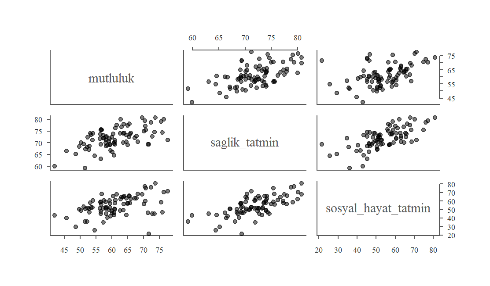
Şekil 6.15: Mutluluk, sağlık tatmini ve sosyal hayat tatmini: serpilme çizimleri matrisi
Bu verilerin gözlem birimi bireyler değil illerdir. İl ortalamaları arasında bulunan bir ilişkinin bireyler için de aynı güçte geçerli olduğunu varsaymak yanıltıcı olabilir. Toplulaştırılmış verilerden bireyler hakkında sonuç çıkarmaya ekolojik yanılgı denir. Ortalamalar bireysel farklılıkları yok ettiği için il düzeyindeki korelasyonlar genellikle bireysel düzeydekilerden daha güçlü çıkar.
Alıştırma 6.3 Kovaryans hesaplama tablosundaki 10 öğrenciye (bkz. Tablo 6.1), derse yalnızca %30 oranında devam ettiği hâlde 95 alan on birinci bir öğrenci eklensin. Devam oranı ile başarı arasındaki korelasyon katsayısı nasıl değişir? Neden?
plot(devam11, basari11, pch =19, col =c(rep("black", 10), "firebrick"),xlim =c(20, 100), ylim =c(40, 100),xlab ="Derse devam oranı, %", ylab ="Başarı (100 puan üzerinden)")text(30, 95, "11. öğrenci", pos =4, col ="firebrick")
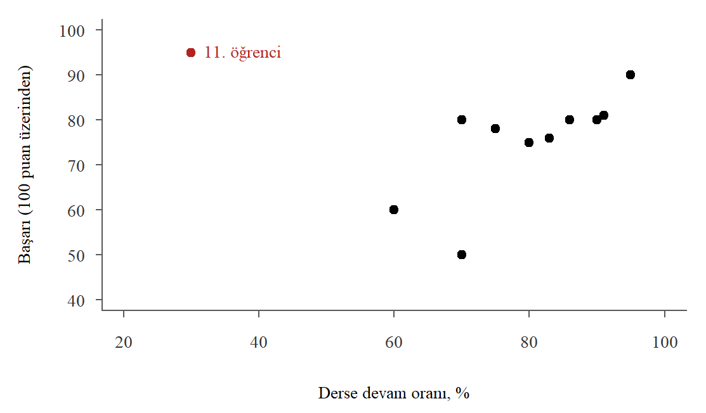
Şekil 6.16: Tek bir uç gözlemin korelasyon katsayısına etkisi
Korelasyon katsayısı 0.74 değerinden -0.02 değerine düşmüştür. Güçlü pozitif bir ilişki, tek bir gözlemle neredeyse tamamen ortadan kalkmıştır. Bunun nedeni yeni gözlemin iki değişkenin ortalamasından da çok uzakta ve “yanlış” bölgede yer almasıdır (Şekil 6.16). Devam oranı ortalamanın çok altında, notu ise ortalamanın çok üzerindedir. Bu gözlemin ortalamadan farklarının çarpımı büyük ve negatif olduğu için diğer on öğrencinin pozitif katkılarının büyük kısmını götürür. Aynı zamanda devam oranının standart sapmasını da büyütür.
Bu alıştırma, Anscombe dörtlüsünün üçüncü veri kümesinde gördüğümüz durumun sayısal bir karşılığıdır. Küçük veri kümelerinde korelasyon katsayısı tek bir gözleme karşı çok duyarlıdır. Böyle bir gözlemi hemen silmek doğru değildir; önce bir veri girişi hatası olup olmadığı araştırılmalı, sonuçların bu gözlem dahil ve hariç ne kadar değiştiği raporlanmalıdır.
Alıştırma 6.4ogrenci_anket veri kümesinde (bkz. Tablo 3.4) öğrencilerin istatistik dersinin zorluğuna ilişkin puanları (istatistik_zorluk) ile dersteki başarı beklentilerine ilişkin puanları (istatistik_basari) yer almaktadır. İki değişken de 1-5 arası puanlarla ölçülmüştür. Bu iki değişken arasındaki ilişkiyi serpilme çizimi, çapraz tablo, Pearson ve Spearman korelasyon katsayılarıyla inceleyiniz.
İki değişken de yalnızca birkaç farklı değer aldığı için 97 öğrencinin cevapları serpilme çiziminde yalnızca 14 farklı noktaya düşer. Noktalar üst üste bindiği için her noktada kaç öğrenci olduğunu serpilme çiziminden okuyamayız. Bu tür değişkenler için çapraz tablo çok daha bilgilendiricidir:
c(pearson =cor(zorluk_puan, basari_puan, use ="complete.obs"),spearman =cor(zorluk_puan, basari_puan, use ="complete.obs", method ="spearman"))
pearson spearman
-0.1485461 -0.1357642
Pearson katsayısı -0.15, Spearman katsayısı -0.14 olarak bulunur. İki katsayı da zayıf ve negatif bir ilişkiye işaret eder: zorluk puanı yükseldikçe başarı beklentisi puanı çok az düşme eğilimindedir. Çapraz tabloya bakınca bu zayıflığın nedeni görülür: aynı zorluk puanını veren öğrencilerin başarı beklentileri geniş bir aralığa yayılmaktadır.
Değişkenler sıralı olduğu için Spearman katsayısı Pearson katsayısından daha uygundur. Ancak 5 kategorili değişkenlerde çok sayıda eşit sıra oluşur ve tek bir sayı tablodaki bilginin önemli bir kısmını kaybettirir. Bu tür verilerde korelasyon katsayısını çapraz tabloyla birlikte raporlamak iyi bir uygulamadır.
Alıştırma 6.5 Bu alıştırmada verileri görselleştirmenin önemini vurgulamak amacıyla geliştirilmiş datasauRus veri kümesini inceleyeceğiz (Matejka and Fitzmaurice 2017). Önce paketi kurup veri kümesini yükleyin:
datasaurus_dozen veri çerçevesinde dataset değişkeniyle ayrılan 13 veri kümesi vardır. Her bir veri kümesi için x ve y değişkenlerinin ortalamasını, standart sapmasını ve aralarındaki korelasyon katsayısını hesaplayın, serpilme çizimlerini oluşturun ve yorumlayın.
Çözüm
split() fonksiyonu veri çerçevesini dataset değişkeninin değerlerine göre parçalara ayırır. sapply() ile her parçaya aynı hesaplamayı uygulayabiliriz:
On üç veri kümesinin hepsinde x’in ortalaması yaklaşık 54.3, y’nin ortalaması yaklaşık 47.8, standart sapmalar yaklaşık 16.8 ve 26.9, korelasyon katsayısı ise -0.069 ile -0.060 arasındadır. Özet istatistiklere bakarak bu veri kümelerini birbirinden ayırt edemeyiz. Şimdi serpilme çizimlerine bakalım:
par(mfrow =c(5, 3), mar =c(2, 2, 2, 1))for (ad innames(parcalar)) {plot(parcalar[[ad]]$x, parcalar[[ad]]$y, pch =19, cex =0.4,xlim =c(15, 100), ylim =c(0, 100), main = ad, xlab ="", ylab ="")}
Şekil 6.17 bu on üç veri kümesinin serpilme çizimlerini göstermektedir. Aynı özet istatistiklere sahip veri kümeleri bir dinozor, bir yıldız, bir daire ya da paralel çizgiler gibi birbirinden tamamen farklı biçimler almaktadır. Sıfıra yakın bir korelasyon katsayısı değişkenler arasında hiçbir ilişki olmadığı anlamına gelmez; yalnızca doğrusal bir ilişki olmadığını söyler. Anscombe dörtlüsünde olduğu gibi, Datasaurus veri kümesi de özet istatistiklerin verinin bütün özelliklerini yansıtmakta yetersiz kalabileceğini göstermektedir.
6.5 Problemler
Problem 6.1 Aşağıdaki ifadelerin doğru/yanlış olup olmadıklarını belirtin ve kısaca açıklayın.
Kovaryans her zaman -1 ile 1 arasında değerler alır.
Korelasyon katsayısının 0.9 olması iki değişken arasında güçlü pozitif doğrusal ilişki olduğu anlamına gelir.
Korelasyon katsayısı sıfır ise iki değişken arasında hiçbir ilişki yoktur.
Değişkenlerden birinin ölçü birimi değiştirilirse korelasyon katsayısı da değişir.
İki veri kümesinin korelasyon katsayıları aynıysa serpilme diyagramları da birbirine benzer.
İki değişken arasındaki korelasyon katsayısı 0.8 ise değişkenlerden birindeki artış diğerinde artışa neden olur.
Değişkenlerden birinin logaritması alındığında Spearman sıra korelasyon katsayısı değişmez.
Problem 6.2 Bir bölgede faaliyet gösteren 6 firmanın yıllık reklam harcamaları ve satışları (milyon TL) aşağıdaki gibidir:
Firma
Reklam harcaması (\(x\))
Satışlar (\(y\))
A
2
20
B
3
26
C
5
29
D
6
38
E
8
41
F
12
56
Serpilme çizimini elle çizin ve ilişkinin yönünü yorumlayın.
Kovaryans hesaplama tablosuna (bkz. Tablo 6.1) benzer bir tablo oluşturarak örneklem kovaryansını hesaplayın.
İki değişkenin örneklem standart sapmalarını ve korelasyon katsayısını hesaplayın. Sonuçlarınızı cov(), sd() ve cor() fonksiyonlarıyla kontrol edin.
Reklam harcaması milyon TL yerine bin TL cinsinden ifade edilirse kovaryans ve korelasyon katsayısı ne olur? Hesap yapmadan yanıtlayın.
Her iki değişkenin sıralarını bularak Spearman sıra korelasyon katsayısını hesaplayın.
Bu verilerden reklam harcamasını artıran bir firmanın satışlarının da artacağı sonucu çıkarılabilir mi? Tartışın.
Problem 6.3 Aşağıdaki her durumda gözlenen korelasyonun nedensel bir ilişkiyi yansıttığı sonucuna varılabilir mi? Korelasyonu açıklayabilecek başka bir mekanizma (ortak neden, ters nedensellik ya da ortak zaman eğilimi) önerin.
İller arasında eczane sayısı ile yıllık ölüm sayısı arasında güçlü pozitif bir korelasyon bulunmuştur.
Bir şirkette çalışanların yıl içinde katıldıkları eğitim saatleri ile performans puanları arasında pozitif bir korelasyon bulunmuştur.
Bir ülkede 1990-2020 döneminde yıllık cep telefonu abone sayısı ile ortalama yaşam beklentisi arasındaki korelasyon katsayısı 0.95 olarak hesaplanmıştır.
Firmalar arasında çalışan başına bilgisayar sayısı ile kârlılık arasında pozitif bir korelasyon bulunmuştur.
Yukarıda (b) şıkkında sözü edilen şirket, eğitimin performansı gerçekten artırıp artırmadığını öğrenmek istiyor. Bu soruyu yanıtlamak için nasıl bir çalışma tasarlanabilir? (bkz. Bölüm 3)
Problem 6.4mutluluk.rda verilerini kullanarak aşağıdaki soruları yanıtlayınız:
ort_gun_kazanc o ilde yaşayan bireylerin ortalama günlük kazançlarını göstermektedir. Bu değişkenin histogramını ve kutu grafiğini çizin. Özet istatistikleri hesaplayın ve grafiklerle birlikte yorumlayın.
mutluluk endeksi ile ort_gun_kazanc arasındaki korelasyon katsayısını bulun. Serpilme diyagramını çizin ve yorumlayın.
Aynı iki değişken için Spearman sıra korelasyon katsayısını hesaplayın ve Pearson katsayısıyla karşılaştırın.
Bu iki değişkenin değişkenlik katsayılarını hesaplayın ve yorumlayın.
Problem 6.5ulkeler.RData verilerini kullanarak aşağıdaki soruları yanıtlayınız:
2022 yılında internet kullanan bireylerin oranı ile kisi_basi_gsyih_sagp değişkenindeki kişi başına GSYİH arasındaki serpilme çizimini hem doğrusal hem logaritmik gelir ölçeğiyle çizin. Her iki durumda korelasyon katsayısını hesaplayın ve karşılaştırın.
Kuznets’in özgün hipotezi gelir eşitsizliğine ilişkindi. Gini katsayısı (gini) her yıl gözlenmediği için her ülkenin 2015 ve sonrasındaki en son Gini gözlemini seçin. Bu gözlemlerle Gini katsayısı ile kişi başına GSYİH’nin logaritması arasındaki serpilme çizimini oluşturun. Ters U biçiminde bir ilişki görüyor musunuz? Korelasyon katsayısı bu ilişkiyi iyi özetler mi?
Türkiye için 1991-2024 döneminde işsizlik oranı ile enflasyon arasındaki serpilme çizimini oluşturun ve noktaları yıllarla etiketleyin. Korelasyon katsayısını hesaplayın. Bu katsayı, işsizlik arttığında enflasyonun düştüğü anlamına mı gelir? Gözlemlerin zaman sırasını dikkate alarak tartışın.
2022 yılı için dogurganlik, kadin_isgucu, kentlesme, egitim_harcamasi ve kişi başına GSYİH’nin logaritmasından oluşan bir korelasyon matrisi hesaplayın. Eksik gözlemler nedeniyle cor() fonksiyonunda use = "complete.obs" argümanını kullanmanız gerekecektir. Bu argüman hesaplamaya hangi ülkeleri dahil eder? Hangi değişken çiftleri arasında güçlü bir ilişki vardır?
Problem 6.6ogrenci_anket.RData verilerini kullanarak aşağıdaki soruları yanıtlayınız:
Boy ile kilo arasındaki serpilme çizimini, noktaları cinsiyete göre farklı sembollerle göstererek çiziniz. Bütün öğrenciler için ve her cinsiyet için ayrı ayrı korelasyon katsayısını hesaplayınız ve karşılaştırınız. Bütün öğrenciler için hesaplanan katsayı neden cinsiyetlere göre hesaplananlardan farklıdır?
Boyu metre, kiloyu gram cinsinden ifade ederek kovaryansı ve korelasyon katsayısını yeniden hesaplayınız. Sonuçları (a) şıkkındakilerle karşılaştırınız ve farkı açıklayınız.
Problem 6.7body.RData vücut ölçümleri veri kümesi 507 yetişkinin boy, kilo, yaş ve çeşitli vücut ölçümlerini içermektedir (Heinz et al. 2003). Cinsiyet gender değişkeninde female (kadın) ve male (erkek) düzeyleriyle kodlanmıştır. Bu veri kümesini kullanarak aşağıdaki soruları yanıtlayınız:
height (boy, cm) değişkeninin kadın ve erkekler için ayrı ayrı kutu çizimlerini oluşturun ve özet istatistiklerle birlikte yorumlayın.
height ve weight (kilo, kg) değişkenlerinin serpilme çizimini oluşturun. Noktaları cinsiyete göre farklı renk ya da sembollerle gösterin.
Boy ile kilo arasındaki korelasyon katsayısını bütün veri için ve her cinsiyet için ayrı ayrı hesaplayın. Sonuçları Problem 6.6 (a) şıkkındaki bulgularla karşılaştırın.
Problem 6.8bakirkoy_ev.RData verisini kullanarak aşağıdaki soruları yanıtlayınız.
Fiyat ile daire büyüklüğünün serpilme çizimini oluşturunuz. İki eksen de logaritmik olan çizimi de yapıp karşılaştırınız.
Bu iki değişken arasındaki Pearson korelasyon katsayısını ham veriyle, logaritmalarla ve Spearman yöntemiyle hesaplayınız. Üç sonucu karşılaştırınız.
Fiyat ile oda sayısı arasındaki korelasyonu bulunuz. Oda sayısı ile daire büyüklüğü arasındaki ilişkiyi de hesaplayarak sonucu yorumlayınız.
Metrekare başına fiyat ile daire büyüklüğü arasındaki korelasyonu hesaplayınız. İşaretini beklediğiniz gibi mi buldunuz?
Aynı hesapları besiktas_ev.RData verisiyle tekrarlayıp iki ilçeyi karşılaştırınız.
Anscombe, Francis J. 1973. “Graphs in Statistical Analysis.”The American Statistician 27 (1): 17–21.
Grossman, Gene M., and Alan B. Krueger. 1995. “Economic Growth and the Environment.”Quarterly Journal of Economics 110 (2): 353–77.
Heinz, Grete, Louis J. Peterson, Roger W. Johnson, and Carter J. Kerk. 2003. “Exploring Relationships in Body Dimensions.”Journal of Statistics Education 11 (2).
Kuznets, Simon. 1955. “Economic Growth and Income Inequality.”American Economic Review 45 (1): 1–28.
Matejka, Justin, and George Fitzmaurice. 2017. “Same Stats, Different Graphs: Generating Datasets with Varied Appearance and Identical Statistics Through Simulated Annealing.” In Proceedings of the 2017 CHI Conference on Human Factors in Computing Systems, 1290–94.
Preston, Samuel H. 1975. “The Changing Relation Between Mortality and Level of Economic Development.”Population Studies 29 (2): 231–48.